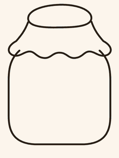

Shared Memory Jar is a small app for two people counting down to the next time they'll see each other. Each person taps once a day, dropping a star into a shared jar — the jar visibly fills as the wait gets shorter, turning a long-distance countdown into something tangible instead of an abstract number.
I designed the following functions: a rolling 24-hour streak system with grace periods and monthly streak repairs, real accounts via Supabase Auth, realtime sync between both partners' devices, on-device and push notifications, and a bilingual (English/Chinese) interface. The core streak, cycle, and star-sizing logic lives in a separately tested, stack-agnostic package (58 unit tests), so the same rules can power the mobile app today and other platforms later.
I'm also exploring more features for long-distance bonding apps in general — avatar customization, shared activities, and other ways to keep partners connected — and looking for more design inspiration as I work toward commercializing the app.
Built with Expo/React Native and Supabase (Postgres, Row Level Security, Auth, Storage, Realtime).
Try Live Demo ↗